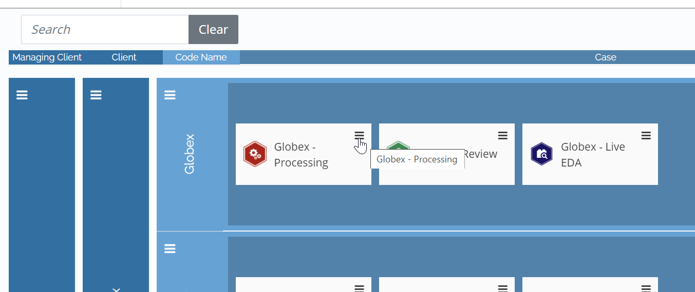
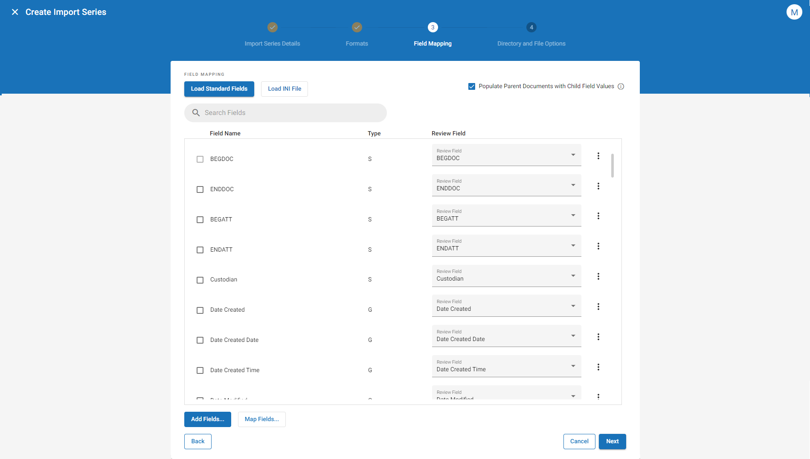
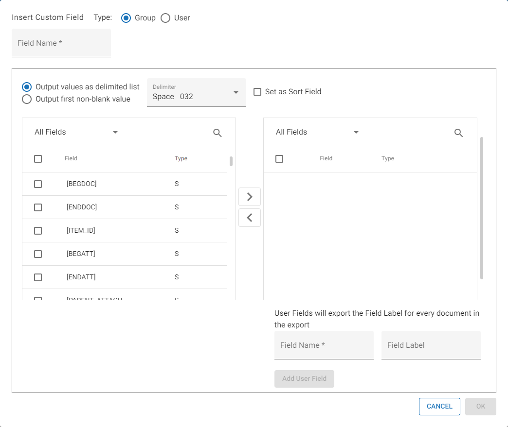
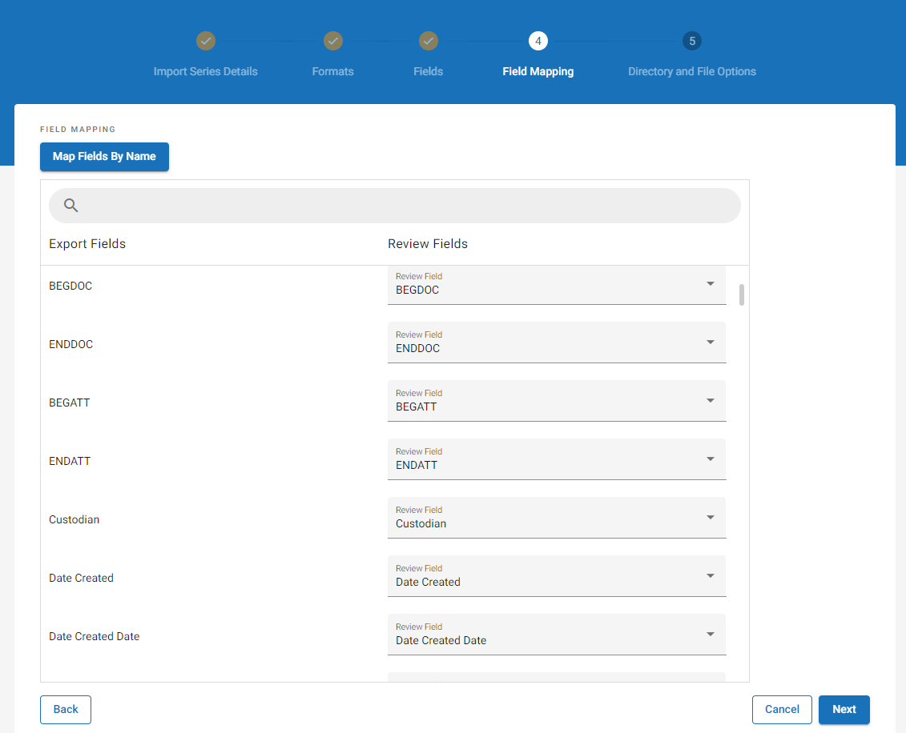
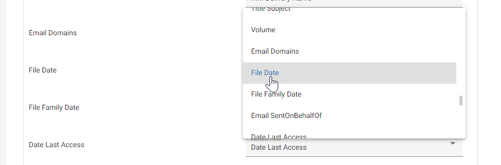
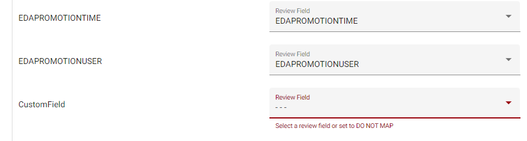
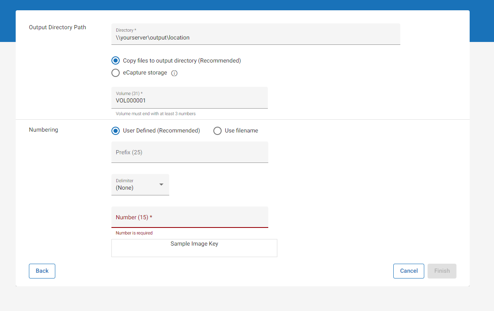

Note: If planning to create a custom field to import data into Review, ensure that your Review case contains an appropriate field to map it to. For instructions on how to create a custom Review field, see Define Database Fields.
To create a new import series in
|
|
Note: If planning to create a custom field to import data into Review, ensure that your Review case contains an appropriate field to map it to. For instructions on how to create a custom Review field, see Define Database Fields. |
Open Case Management and locate the Processing case for which you would like to create an import series.
Click the hamburger icon corresponding to the required case.

In the menu that displays, select Case Settings. The work area opens. Select the Load to Review tab near the top.
On the Review Importing page, select Create Import Series.
Complete the first step of the wizard by defining the import series details.
|
Option |
Description |
|---|---|
|
Name |
Click the Name field and enter a name for the import series. |
|
Review Case |
From the drop-down menu, select the Review case into which you would like the documents imported. |
|
Description |
You can add an optional description to provide additional information or context to the import series. This may be helpful if you have multiple import series defined for a single Processing case and would like to further differentiate them. |
|
Set as active Series |
Select this checkbox to set the import series as active. When active, the import series is able to promote ingested documents into the selected Review case. When inactive, the import series is "turned off" and no promotion can take place. |
|
Index data after import |
Select this checkbox to index the imported data after processing completes. The indexed data becomes searchable in Review. If you leave this checkbox unselected, you can also manually index your data after the fact. See |
When finished, click Next to proceed to the next step in the wizard.
Complete the second step of the wizard to convert specific native file types to alternative file types during import.
Select email type(s) for conversion. The selected email types are converted to the alternative file format you select in the next step.
|
|
Description |
|---|---|
|
Outlook |
Select this option to import an alternate native file for Outlook files. The default import format is MSG. |
|
Lotus Notes/ IBM Notes/ HCL Notes |
Select this option to import an alternate native file for Lotus Notes/ IBM Notes/ HCL Notes files. The default import format is DXL. |
|
Outlook Express, MBOX and other RFC 5322 formatted mail |
Select this option to import an alternate native file for Outlook Express, MBOX, and other RFC 5322 formatted mail files. The default import format is EML or EMLX. |
|
GroupWise |
Select this option to import an alternate native file for GroupWise files. The default import format is XML. |
Select one of the following formats. The email types selected in the previous step are converted to the selected file format during import:
|
Format |
Description |
|---|---|
|
MHT |
Native Import: Imports selected email type to a standardized format rather than to DXL or XML. Types include Outlook, Outlook Express, IBM (formerly Lotus) Notes, and GroupWise. (An MHT is an Archived Web Page file with information in Multipurpose Internet Mail Extension HTML [MHTML] format with an MHT extension. All relative links in the Web page are remapped and the embedded content is included in the MHT.) |
|
RTF (Rich Text Format) |
Uses Microsoft Word to open the MHT and saves it in RTF; a more widely accepted format. |
|
HTML |
HTML documents can have inline images; the images themselves are not included in the HTML. The images must be included in the import in order to access the inline images. |
When finished, click Next to proceed to the next step in the wizard.
Complete the third step of the wizard to determine which fields are selected for

Determine what fields to include in the import:
Select Load Standard Fields to use the default list of fields.
|
|
Note: When you select this option, a confirmation dialog appears. Select Load Defaults to proceed with the update. Any previous changes you made to the field list are erased. |
Select Load INI File to use a pre-generated list of fields saved to an INI file. Navigate to the file in the dialog box that displays and then select Open.
Select individual fields by selecting the checkbox beside each field and using the arrow icons to move them from the left list box to the right, or vice-versa. Fields that display in the right list box are included for import, while the fields that display in the left list box are excluded.
|
|
Note:
|
There are several field types that can be imported. These field types are designated as follows:
|
TYPE |
Description |
|---|---|
|
S (System Fields) |
Standard system fields in |
|
M (Metadata Fields) |
Metadata fields are retrieved from documents during processing. |
|
F (QC Flags) |
The QC flags that display in the list are both system QC flags and any user defined QC flags. |
|
U and G (User and Group Fields) |
These comprise two types: User [U] and/or Group [G]. These fields are created through the Insert Custom Fields function. When you create a custom User field and add an optional field label, the field label you provide gets applied to every document during import. Otherwise, the value may be blank. The Group fields are space-delimited combinations of System (S) and/or Metadata (M) field types. |
You can update Field Labels and set Sort fields by selecting the pencil icon beside the name of the field in question in the Selected Fields list box. The Edit Field dialog box appears.
|
|
Note: The type of field you edit determines the options available.
|
To edit the field label, click into the Field Label field and update as needed. The field label you provide gets applied to every document during import.
Select the checkbox next to Set as Sort Field to assign the field as such. When applied, a Y displays in the Sort column.
|
|
Note: The Set as Sort Field option only displays for those fields that can be sorted, such as a metadata field. |
When a field is marked as a Sort field, it applies the value of the selected field to all family members of a parent item. This allows sorting on the specified field in an external application to represent a family. For example, when the Sent Date field is made into a Sort field, the value of the Sent Date field for an email is used as the value of the same field in the exported load file for all of the email’s attachments.
Select Insert Custom Field to add a custom group or user field for export.
A Group field can be used to combine the values of multiple fields and force them into a single field on import. To insert a custom Group field for import, click

In the Insert Custom Field dialog, next to Type at the top of the dialog, ensure that the Group radio button is selected.
Enter
a Field Name.
Select Output values as delimited list if you would like to present the values of the selected fields so that they are presented together, separated by a delimiter of your choice. Choose the needed delimiter from the drop-down option.
Select Output first non-blank value if you would like to present the first non-blank value of the selected fields, starting with the top field in the list and moving down.
Click the Set as Sort Field checkbox if you would like to set the field as such. For more information about Sort Fields, click
Select the checkbox next to Set as Sort Field to assign the field as such. When applied, a Y displays in the Sort column.
|
|
Note: The Set as Sort Field option only displays for those fields that can be sorted, such as a metadata field. |
When a field is marked as a Sort field, it applies the value of the selected field to all family members of a parent item. This allows sorting on the specified field in an external application to represent a family. For example, when the Sent Date field is made into a Sort field, the value of the Sent Date field for an email is used as the value of the same field in the exported load file for all of the email’s attachments.
Select individual fields by selecting the checkbox beside each field in question and using the arrow icons to move the fields from the left list box to the right, or vice-versa. Fields that display in the right list box are included for import, while the fields that display in the left list box are excluded.
|
|
Note:
|
If you would like to include a custom User field as one of the Group fields, you can likewise do so on this page.
Enter
a Field Name.
Enter an optional Field Label. This label is a specified value that gets imported with every document. For instance, a custom User field might be "Case Number," with a Field Label as "123456."
Select Add User Field.
A User field is a static field created by the user with a specified name AND value. To insert a custom User field for import, click
In the Insert Custom Field dialog, next to Type at the top of the dialog, select the User radio button.
Enter
a Field Name.
Enter an optional Field Label. This label is a specified value that gets imported with every document. For instance, a custom User field might be "Case Number," with a Field Label as "123456."
Select Populate Parent Documents with Child Field Values if you would like to populate parent documents with field values that are normally only populated on child documents. For instance, the "Parent ID" field, which is usually only populated on child documents, would also be populated on the parent document itself when this option is selected.
When finished, click Next to proceed to the next step in the wizard.
Complete the fourth step of the wizard to map the export fields (selected in the previous step) to those that will display in Review.

To map fields, complete the procedure below:
Click Map Fields by Name to match import fields to Review fields for every instance in which the two names are the same.
|
|
Note: |
For fields that are already mapped, inspect the

Review fields that have not yet been mapped display in red.

Click the Review field and select the correct field from the dropdown.
|
|
Note: To map a custom Import field to a custom Review field, the Review field must already be created. However, if the Review field has not yet been created, you may select Do Not Map on this step. You could then finish creating the import series so that your changes are saved, and then create the custom Review field after the fact. Once the custom Review field has been created, you could then return to edit the import series and map the field at that point. For instructions on how to create a custom Review field, see Define Database Fields. |
When finished mapping fields, click Next to proceed to the next step in the wizard.
Complete the fifth step of the wizard to set additional directory and file options.

Define your Output Directory: indicate the directory where the imported data will be copied and saved.
Copy files to output directory (Recommended): This option stores a copy of the imported files in the directory defined above.
eCapture Storage: When this option is selected, the files are stored in working directories created in eCapture during processing.
|
|
Note: When eCapture storage is selected, if you archive or delete data from the client directory, documents may no longer display properly in Review, as they are referenced in this location. |
Provide a Volume number.
Define image key (BEGDOC) numbering:
(Optional) Provide a prefix for each imaged document. The prefix chosen will be appended to the beginning of each image key.
(Optional) If applying a prefix to each image key, choose a delimiter to separate the prefix from the image number. Options include:
None
Decimal
Hyphen
Underscore
Space
Provide an image number.
"Use filename" should only be used with previously processed and uniquely numbered documents, which are named with bates numbers (e.g., PDF files named with bates numbers). Using this option on documents with original filenames can potentially overwrite files.
When all options have been defined, click Finish to create the Import Series.
Related Topics